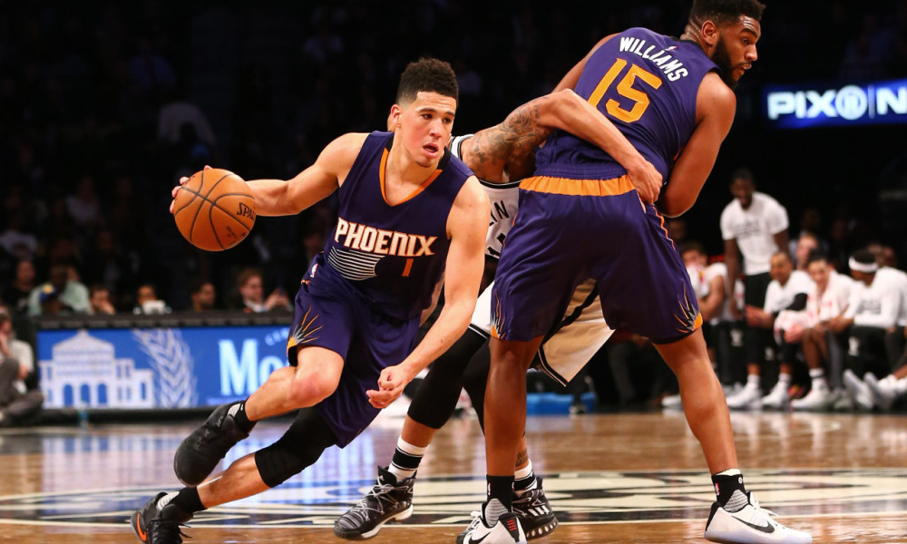

Game 1: Los Angeles Clippers at Orlando Magic
My Pick:
Los Angeles Clippers
Why I'm Rolling with them:
Lou Williams had another good game against the 76ers, as he put up 26 points to lead the team in scoring. However, Gallinari and Harris also put up 25 and 24 points respectively, proving that this LA team doesn't need a star to win. Boban remains an absolute monster, putting up 15/11 in 23 minutes. The Clipper's defensive guard core should have a field day against this weak guard rotation in Orlando, which should make up for Gortat's subpar play. Clippers win 110-102.
Game 2: Houston Rockets at Brooklyn Nets
My Pick:
Brooklyn Nets
Why I'm Rolling with them:
Harden is still out, and everything I've said in the past still applies. This Brooklyn team is coming off of a win against a good Detroit team, and won't be scared off by Paul, Capela and Melo. Dinwiddie has been playing very well lately, hitting the game winner against Detroit. LeVert is primed for another good game given Houstons lack of wing defense. Nets take it 121-113.
Chris Paul is missing his partner in crimeGame 3: Oklahoma City Thunder at Washington Wizards
My Pick:
Oklahoma City Thunder
Why I'm Rolling with them:
Oklahoma has had 2 games in a row now where at half they looked like a lottery team, then in the second half looked like a contender. Their win against the Hornets proved that they can still compete without Paul George playing well, and their defensive prowess should help prove very difficult for the Wizards. Howard is making his debut, but he's doing it against a very strong rebounding team in OKC and I don't know if he's going to be enough to tip the scales. The Wizards have looked bad, and unless they surprise me, I think they're gonna have a hard time as they lose 120-111.
Game 4: Indiana Pacers at Chicago Bulls
My Pick:
Indiana Pacers
Why I'm Rolling with them:
Domantas Sabonis tied his career high against the Knicks on Wednesday, cementing his spot as one of the best bench players in the league. That was instrumental in giving the Pacers the 107-101 victory, but he wasn't the only performer that night. Oladipo continues playing well, putting up 24 points. On the Bulls side, Wendell Carter Jr had his breakout game, getting 25 points in their loss to the Nuggets on Wednesday. But this Indiana team won't let that happen again, and the battle in the paint should swing Indiana's way, with a 111-104 victory.
Game 5: New York Knicks at Dallas Mavericks
My Pick:
Dallas Mavericks
Why I'm Rolling with them:
The Dallas Mavericks are currently sitting in 13th in the west with a 2-6 record, but only one loss (to the Suns opening night) has seen them lose by 10 or more. This bodes well for their ability to stay competitive, and now that they've realized Doncic is their best player I expect them to do even better. Doncic is shooting 40% from 3, and is looking like a veteran already. With him as their primary ball handler, I'm counting on Deandre Jordan to have a good game, taking advantage of the relatively weak interior defense of the Knicks. Ntilinka should continue to impress, but that won't be enough as the Mavs win 117-112.
Game 6: Memphis Grizzlies at Utah Jazz
My Pick:
Utah Jazz
Why I'm Rolling with them:
The Utah Jazz lost a close one against the Wolves in which they let a crafty point guard wreak havoc on them, so this game against Memphis may have more of the same with Conley sure to wreak some havoc. That said, the Jazz have a lot of promising things going for them. Gobert had 22 points in the loss, continuing his newfound offensive excellence. Donovan Mitchell has found his stride, and should be able to capitalize against this Memphis team. There hasn't been a Grizzlies Jazz game where both teams scored over 100 since 2008, I don't expect that to change even with the increased pace this year. Jazz 103-97.
Game 7: Toronto Raptors at Phoenix Suns
My Pick:
Toronto Raptors
Why I'm Rolling with them:
The Raptors looked absolutely dominant defensively against Philadelphia, making Simmons cough up 11 turnovers, almost 3 times his next highest amount for this season. Kawhi is playing his first road game of the season, just in time to defend Devin Booker, who's back in Phoenix's lineup. Josh Jackson has looked subpar this year, and Phoenix's overall lack of guard depth is going to really hurt them tonight playing against a team like Toronto, who has such a strong guard lineup. I'm interested to see how Ibaka fairs on Ayton, or if JV will be the primary matchup. Raptors take this easily, 120-104.
 Devin Booker is returning tonightGame 8: Minnesota Timberwolves at Golden State Warriors
My Pick:
Golden State Warriors
Why I'm Rolling with them:
Derrick Rose just set his career high two games ago against the Utah Jazz. He looks like an entirely new player this season, and has a lot of his confidence back. Towns also had a great game, with 28/16. Not only that, the Wolves will also have Jimmy Butler back for tonight's game against the Warriors. But as has become tradition, I'm still picking the Warriors. I don't see a weakness in this Warriors Team, who have consistently demolished teams across the league. I have no doubt this will continue, and this Timberwolves team can't count on Rose having the game of his life again. Steph Curry will go off and score 32 in a Warriors win, 133-124.